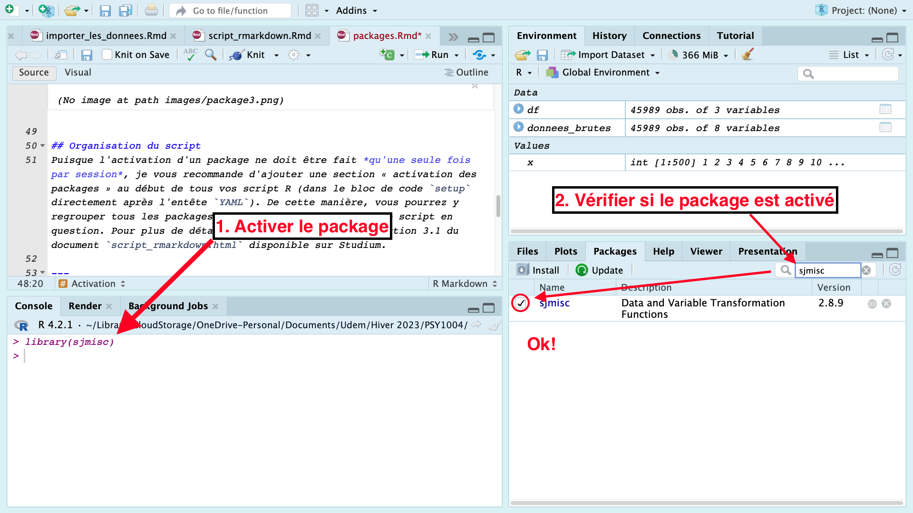

Les packages
Xavier La Rochelle
2023-11-22
Important : Pour faciliter votre compréhension de ce guide, vous devez préalablement vous êtres familiarisé.e avec les bases de la rédaction d’un script RMarkdown. Si ce n’est pas déjà fait, veuillez lire attentivement le guide suivant : Rédiger un script RMarkdown.
Les packages sont des modules (ou extensions, librairies, bibliothèques) qui contiennent un ensemble de fonctions souvent liées à une méthode ou un domaine particulier.
1 Installer et activer les packages
Les packages doivent être installés une seule fois, mais activés à chaque session (aka. chaque fois que vous ouvrez RStudio).
1.1 Installation
Voici la syntaxe pour installer/télécharger un package.
install.packages("nom_du_package")Note: Les guillemets sont nécessaires.
Si le package s’installe correctement, vous devriez être en mesure de
le trouver dans l’onglet packages de la fenêtre en bas à
droite dans RStudio. Puisque cette commande ne doit être exécutée qu’une
seule fois, il est inutile de l’inclure à votre script. Vous pouvez
simplement l’exécuter dans la console (l’onglet en bas à gauche dans
RStudio).

1.2 Activation
Voici la syntaxe pour activer (charger) un package :
library(nom_du_package)Pour savior si un package a été correctement activé dans votre
session actuelle, vous pouvez vérifier que celui-ci est coché dans
l’onglet packages de la fenêtre en bas à droite dans
RStudio.

1.3 Organisation du script
Puisque l’activation d’un package ne doit être fait qu’une seule
fois par session, je vous recommande d’ajouter une section «
activation des packages » au début de tous vos script R (dans le bloc de
code setup directement après l’entête YAML).
De cette manière, vous pourrez y regrouper tous les packages dont vous
avez besoin pour le script en question. Pour plus de détails, veuillez
consulter la section 3.1 du document script_rmarkdown.html
disponible sur Studium.
2 Packages utiles
Voici une liste des principaux packages que nous utiliserons durant la session :
tidyverse= ensemble de packages comprenant :readr= importation de données
tibble= tableaux de données
ggplot2= visualisation de données/graphiques
dplyrettidyr= manipulation de données
sjmisc= transformation de données + fonctions utilitaires diverses
jmv= méthodes statistiques
psych= méthode statistiques courantes en psychologie
rmarkdownetknitr= Literate Programming
3 Documentation
Les packages R et leurs fonctions sont généralement accompagnés de
vignettes destinées à informer l’utilisateur sur leur
fonctionnement. L’opérateur ? permet d’accéder à cette
documentation. Voici la syntaxe complète pour accéder à la documentation
d’un package ou d’une fonction :
# Documentation sur un package en général
?nom_du_package
# Documentation sur une fonction
?nom_de_la_fonction # Note: le package de la fonction doit être activé